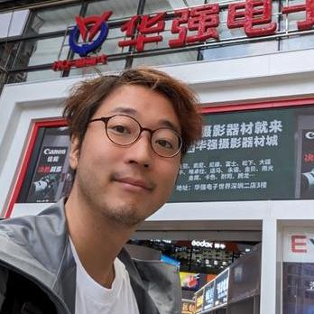

Shinya Ishikawa (meganetaaan)
I am a software engineer interested in:- Human Machine Interface
- Human Robot Interaction
- Front-end for Web Development
- Enterprise Systems Engineering

Work Experience
RT Corporation (Software Engineer / UX Designer, August 2019 -)
- Foodly: An innovative collaborative robot that serves lunch next to people
NS Solutions Corporation (R&D, April 2014 - July 2019)
- hifive: The web application platform especially for enterprise systems (GitHub)
- Pitalium: Testing automation library for multi-device regression tests (GitHub)
Honda Research Institute Japan Co.,Ltd.(Software Engineer, Part-time, September 2011 - March 2014)
- Multi-modal dialogue system
- Robotics(NAO/ Aldebaran)
Education
MS Computer Science Tokyo Institute of Technology (September 2013)
- Multi-modal dialogue system
- Pattern recognition
BS Computer Science Tokyo Institute of Technology (September 2011)
- Multi-modal dialogue system
- Natural language processing
Publication
- 協働ロボットの人型デザインと安全のための表示器に関する試作研究(RSJ2020)
- 実践Moddable（技術の泉シリーズ）
- 実践Moddable
- はじめてのM5Stack
- 悩めるSEを救う4つのすすめ
- プロ直伝 業務システム開発のためのHTML5攻略ガイド
- HTML5で業務システムを構築しよう(Serial publication on an IT news site)
- 多人数対話ロボットの実現にむけたマルチモーダル対話データの収集と分析(JSAI2013)
Presentation
- Moddableで始めるJavaScript×IoT開発（M5Stack User Meeting Vol.8）
- なぜModdableで作るのか（TC39 Seminar）
- What I made with Moddable & M5Stack（M5Stack User Meeting Vol.5）
- M5Stack山盛り！Maker Faire Tokyo 2018に行ってきた（M5Stack User Meeting Vol.3）
- M5Stackで静かに音を鳴らす3つの方法（M5Stack User Meeting Vol.2）
- こどもにやさしいM5Stack（M5Stack User Meeting Vol.1）
- 5分でわかるVISUAL TESTING FOR HTML5（HTML5 Conf 2017）
- SeleniumConf16 UK参加報告（Selenium勉強会）
- 私がSeleniumを使ってスクリーンショットを撮るまでに出会った闇の全て（OSC Tokyo 2015 Fall）
Blog
Certification
- Embedded Systems Specialist (2018)
- Security Specialist (2017)
- Database Specialist (2016)
- Upper Intermediate English Skill, TOEIC score900 (2015)
- Drivers License (2013)
Languages, Skills and Technologies
- Fundamental skills in robotics development: mechanical design, circuit design, and board design for a two-wheeled robot, as well as firmware development, including multiple microcontroller communications and low-layer drivers.
- Team building and project management for a team of about 10 people
- Technical writing of acceptable quality for commercial publication(in Javanese)
- Extensive experience in requirements acquisition and requirements definition in enterprise web system
- Work experience of designing large web applications/components with reasonable maintainability
- Building modern web systems using full-stack frameworks (Next.js)
- IaC and Continuous delivery (Docker)
- Leading skills for TypeScript, JavaScript
- Moderate knowledge for C, C++ and Python
- IoT programming with M5Stack and Raspberry Pi
Hobby
I love OSS. I love building a handy UI library. I love DIY-ing kawaii things.- Stack-chan: A JavaScript-driven M5Stack-embedded super-kawaii robot.
- ロボと：A robot designed by my son
- Mai5 (maigo): The Talking Lost Child Alarm made with M5Stack
- 東工大レゴランド「素数チャレンジ」（voice UI and prime number judgement part）